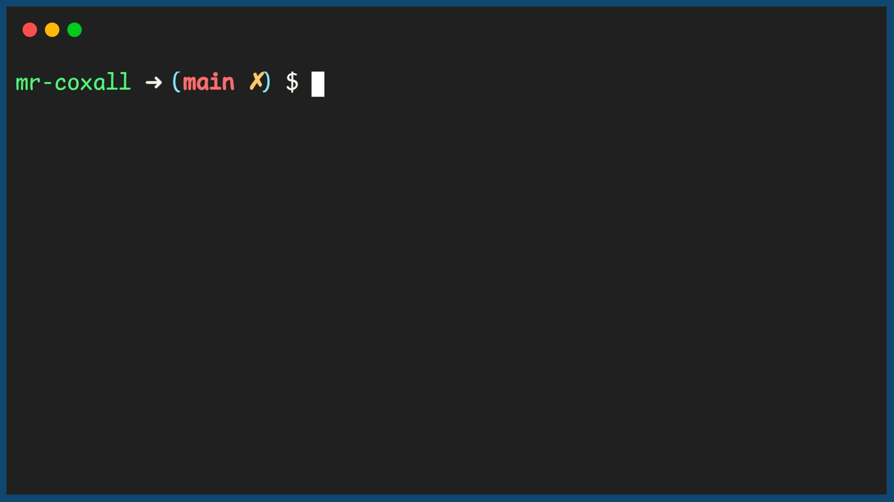

Recursion
Up to this point we have been focusing on a structured approach to programming. We have ensured that we can easily follow the flow of a program, even if we create functions to modulate out components that we use often. There is one more interesting way to solve programs, that uses modularity but in a strange method. We have become accustomed to calling a function, doing the action and then returning to the flow of the program. But what would happen if in a function we called the exact same function? If we do this it is called recursion.
The first question we need to ask ourselves is can we legally do this? This is a really good question, since in some programming languages, recursion is actually illegal and you will not be able to compile you program. Most modern languages actually let you do this. The second question you might be asking is, would I end up in an infinite loop? The answer is you might, just like you could in any looping structure if you do not write the code correctly. But if you write the code, “properly” you will not end up in an infinite loop.
To prevent yourself from ending up in an infinite loop you will need a way to exit the continual process of being in a function and then calling the exact same function. To prevent this from happening, it is common to actually have a conditional statement that will exit the function. This is called the base case. The goal of the base case is to exit the function and return to the previous function call. This is the key to recursion, you are calling the function, but only if a certain condition is met, else you return to the previous function call.
As an example we can look at the problem of calculating the factorial (n!) of a number. The factorial of a number is the product of all the numbers from 1 to n. So 5! = 5 * 4 * 3 * 2 * 1 = 120. We can write a program to calculate the factorial of a number using a loop, but we can also write a program to calculate the factorial of a number using recursion. The first thing we need to do is to write the base case. In this case, we will say that if the number is 1, then the factorial is 1 and just return the answer. This is because 1! = 1. If the number is not 1, then we will call the function again, but this time with the number - 1. This will continue until we reach the base case.
In most modern IDEs you can also watch your progress by looking at the stack. The stack is a data structure that is used to keep track of function calls. When you call a function, it is added to the stack, when you return from a function, it is removed from the stack.
By using recursion, what you are trying to do is simplify out the problem to something very trivial to program. Remember that in our problem solving model, trying to simplify out the problem was really important. Here is the n! problem solved using recusion.
Code for a Recursive Function
Example Output
